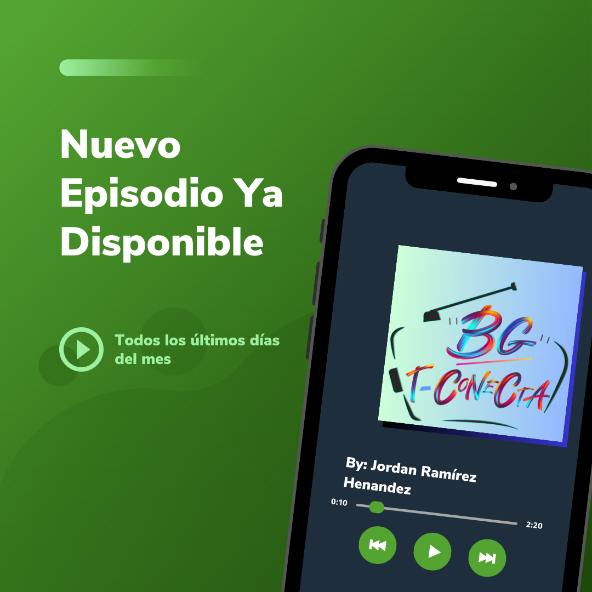

Podcast educativo
BG te conecta con el contenido educativo más atractivo, divertido, interesante y novedoso, ¡Así que sintonízanos!.
Ver proyecto
BG te conecta con el contenido educativo más atractivo, divertido, interesante y novedoso, ¡Así que sintonízanos!.
Ver proyecto
Creación y difusión de video promocional a la EPO 21 referente al concurso de los 103 municipios.
Ver proyectoTiene como finalidad difundir el trabajo docente y del alumnado de la zona escolar.
Ver proyectoCreación de sitio web a centro de bachillerato tecnológico con la finalidad de realizar una mayor difusión a la información de mayor relevancia.
Ver proyecto
Capacitación de la planta docente EPO 21 en la utilización de dispositivos tecnológicos para potencializar la capacidad de inspirar y transformar la vida de los estudiantes.

Capacitación a la planta docente de la Zona BT009 en la utilización de herramientas que conforman la G-suite.
Evento que realizo semestralmente, teniendo como finalidad mostrar que el educando se ha apropiado del conjunto de conocimientos, habilidades y destrezas, que le permiten ser competente ante diferentes situaciones que se presentan en el ámbito educativo, así como en la vida diaria.